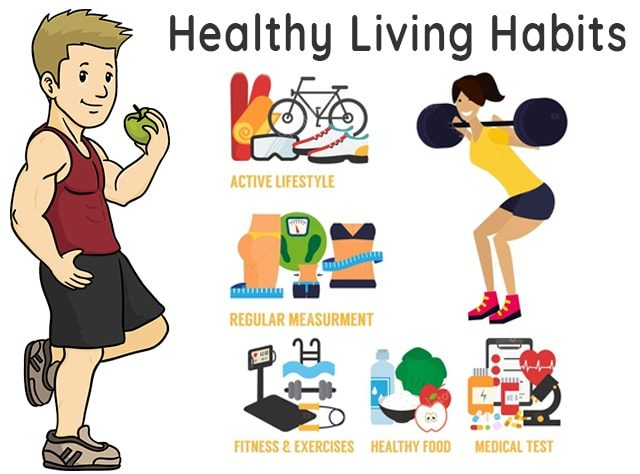
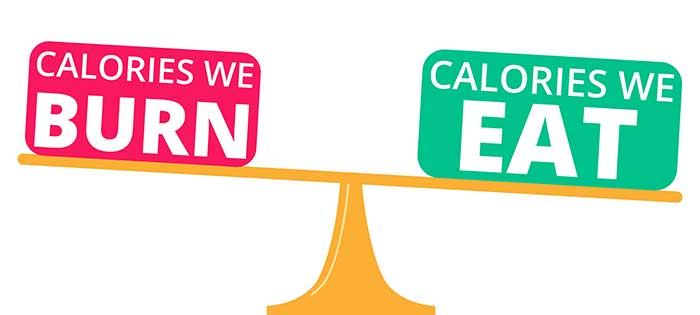
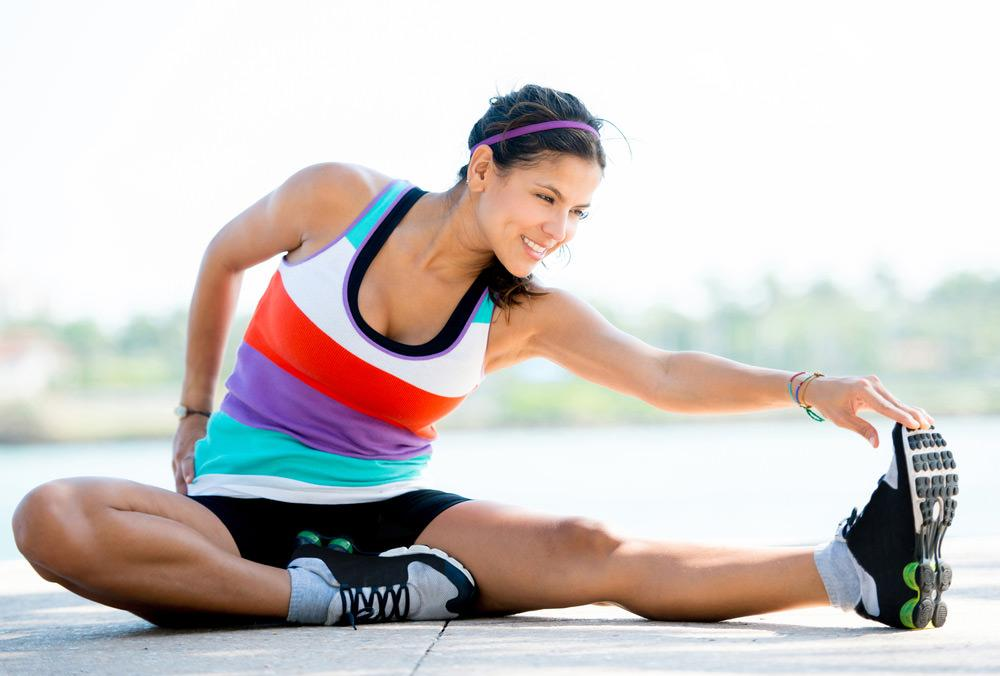
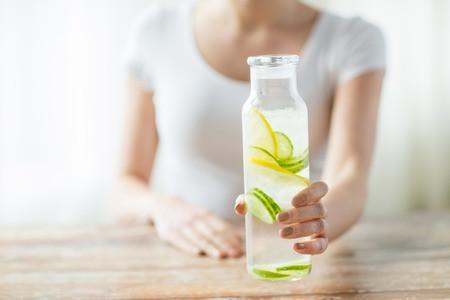
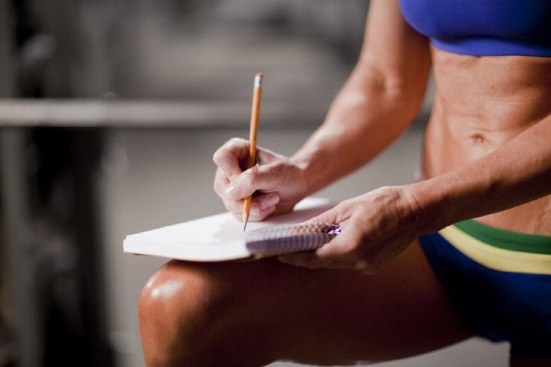
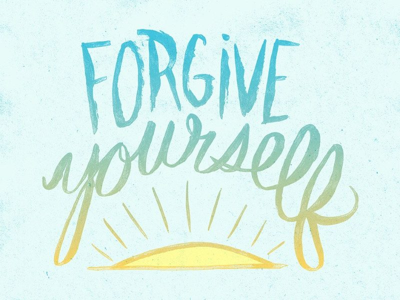

Smoothies
Mantain Your Healthy Lifestyle with these 7 Tips
Whether you’ve already reached your target weight or you’re eagerly anticipating the moment
that you do,
understanding how to maintain a healthy status is essential. From staying on top of maintenance calories to
knowing how to handle setbacks, use these seven tips to maintain your healthy lifestyle.
1.Maintain Healthy Habits Every Day:

When it comes to maintaining a healthy lifestyle, one of the most important things you
can do is simply striving
for consistency. No matter how busy life gets or how much your schedule changes on a daily basis, try to eat the
same balance of whole foods, consume a similar number of calories, and work in a consistent amount of physical
activity.
You might be tempted to maintain your healthy habits during the week and give yourself a break on the weekend,
but it’s important to keep things consistent every day of the week. By sticking to your healthy habits seven days
a week, you’ll be less tempted to binge and more likely to sustain your weight loss for the long term.
2. Stay On Top of Your Maintenance Calories:

After reaching your weight loss goal, you might be tempted to ease up on your diet plan
or change your eating patterns altogether. While it might be a good idea to incorporate a different range of
nutritious foods in your diet, it’s important to keep an eye on your caloric intake. After all, the number of
calories you need at your target weight probably won’t be the same as what you needed when you began your weight
loss journey.
To determine how many maintenance calories you need, calculate your total daily energy expenditure (TDEE)
regularly to ensure that you’re helping your body achieve the ideal energy balance. To do this, multiply your
weight in pounds by 1.2 if you’re relatively sedentary, by 1.5 if you get moderate exercise, or by 1.75 if you’re
training for a marathon. Then, use a Calories Per Day calculator app to track your caloric intake and make sure
you’re getting what you need to maintain your current weight.
3. Stick to an Exercise Routine You Love:

You already know that regular exercise and good physical fitness is essential for
helping you reach your ideal weight. But you might not realize how important exercise is for feeling good and
maintaining a healthy lifestyle.
If you’re already used to getting your cardio and strength training in during your daily visit to the gym, keep
it up. If you’re ready for a change of your routine, however, try not to take a break. Instead, squeeze in at
least 60 minutes of physical activity each day, whether you’re jogging on the treadmill, going for a swim, or
going for a hike around your local park.
4. Increase Your Water Consumption:

When your primary goal is getting in shape and eating right, you might not give water
the attention it deserves. As you strive to keep up your healthy habits, however, it’s important to increase your
water consumption.
Not only will drinking water keep you hydrated and improve how your body functions, but keeping the water flowing
can also help with weight maintenance. Try drinking a large glass of water before a meal, and the feeling of
fullness you’ll experience could help to reduce your calorie intake.
5. Get a Full Night’s Sleep:
When your primary goal is getting in shape and eating right, you might not give water
the attention it deserves. As you strive to keep up your healthy habits, however, it’s important to increase your
water consumption.
Not only will drinking water keep you hydrated and improve how your body functions, but keeping the water flowing
can also help with weight maintenance. Try drinking a large glass of water before a meal, and the feeling of
fullness you’ll experience could help to reduce your calorie intake.
6. Track Your Progress:

After tracking your weight loss progress carefully for months or years, you might be
looking forward to setting aside the scale or putting down the calorie tracking apps. Reaching your target weight
doesn’t mean you should stop assessing your progress, though. Instead, it’s important to continue to track your
progress so you can make sure you’re maintaining your healthy lifestyle.
Use an app to continue to track your food intake and exercise routines, and make a point of hopping on the scale
once a week. Since your new goal is maintaining your current weight, you’ll want to keep an eye out for weight
gain or loss. When you use an app to keep a digital diary, you can easily look back on your patterns and identify
unhealthy habits before they cause you to get too far off track.
7. Forgive Yourself For a Bad Day:

Even when you try your hardest to stick to your healthy habits, you have to expect the
occasional setback. Whether you feel under the weather and have to skip your spin class or you accidentally
overindulged at a birthday party, you’re bound to have a bad day every once in awhile.
When this happens, don’t assume the worst or convince yourself that you’ve ruined your diet for good. Instead, do
your best to power through the day, forgive yourself for a minor slip up, and get back to your healthy habits
right away. Try drinking extra water, making sure that you get enough sleep, and restocking your fridge with
healthy options. Understand that one off day won’t compromise all your hard work and that a small setback doesn’t
have to derail everything you want to achieve.
As you adopt these seven strategies and strive to keep your energy balance consistent, keep in mind that
maintaining optimal health isn’t merely a short-term goal. Consider a healthy lifestyle to be the key for your
long-term health, and set far-reaching goals that will help you stay healthy no matter what life may bring.
Subscribe to my blog and become the best version of you
<< Previous Next >>